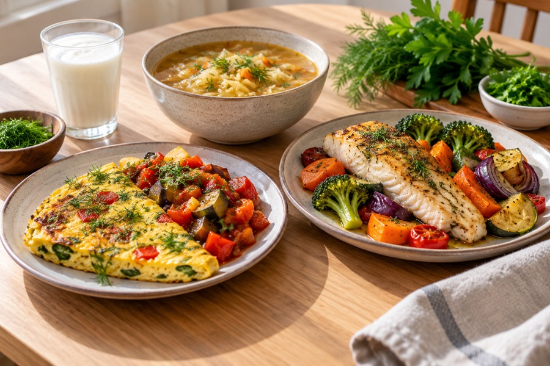

Jadłospis według Bołotowa: od czego zacząć
Jadłospis według Bołotowa to nie dieta z liczeniem kalorii. Opiera się na kilku prostych zasadach — trzy z nich możesz wypróbować od razu.

Kto po raz pierwszy słyszy o odżywianiu według akademika Borysa Bołotowa, zwykle spodziewa się listy zakazanych produktów i tabeli kalorii. Nic takiego w jego systemie nie znajdziesz. Liczy się raczej to, jak, kiedy i w jakiej ilości jemy — oraz kilka zasad, które na pierwszy rzut oka wyglądają na drobiazgi. Trzy z nich możesz wypróbować już jutro.
1. Nie popijaj posiłków
Szklanka wody lub herbaty do obiadu to dla większości z nas oczywistość. Podejście Bołotowa radzi jednak pić między posiłkami: mniej więcej 20–30 minut przed jedzeniem, a potem dopiero w pewnym odstępie po nim. Ilość wyznacza pragnienie. Spróbuj przez tydzień i obserwuj, jak czujesz się po jedzeniu.
2. Porcje na oko dłoni, nie na wadze
Ważenie każdego kęsa szybko się nudzi. Wystarczy prosta miara: kawałek mięsa lub ryby wielkości dłoni bez palców, dodatek mniej więcej jak zaciśnięta pięść. Talerz ma wtedy rozsądną wielkość, a ty nie musisz niczego liczyć.
3. Coś kwaśnego i kiszonego na talerzu
Do mięsa, ryby czy jajek w jadłospisie Bołotowa należy coś kwaśnego lub kiszonego — trochę kiszonej kapusty, ogórek kiszony albo szklanka kefiru. Kasze i pieczywo są dodatkiem, a nie podstawą. I jeszcze jeden drobiazg: jedzenie powinno być letnie, nie gorące ani zimne.
Dlaczego właśnie tak?
Każda z tych zasad ma swój powód, a wszystkie wynikają z jednej myśli: Bołotow stawiał w centrum swojego systemu trawienie. Kto zrozumie, dlaczego przywiązywał do niego taką wagę, łatwiej dopasuje jadłospis do siebie — zamiast trzymać się cudzego przepisu.
Całe menu według systemu Bołotowa przygotowaliśmy w PDF — do pobrania za darmo. Znajdziesz w nim:
- podstawowe zasady żywienia i picia;
- jak oszacować porcje bez wagi kuchennej;
- warianty śniadań, obiadów i kolacji na każdy dzień;
- przepis na zupę warzywną z kiszoną kapustą;
- co z chlebem i owocami.
Jeśli chorujesz przewlekle lub stosujesz specjalną dietę, przyjmujesz leki albo jesteś w ciąży, skonsultuj zmiany w jadłospisie z lekarzem lub dietetykiem.
Menu pobierzesz od razu po wypełnieniu formularza poniżej.
Artykuł ma charakter wyłącznie informacyjny i nie zastępuje porady specjalisty.